启动信息属于对话开头，不属于固定屏幕边框。
宽屏保留身份、环境统计和三条提示；窗口变窄时压平信息，极窄时只留一行。它通过 Pi 的 Header 区进入 transcript，后续对话自然把它滚走。
{kind=link}
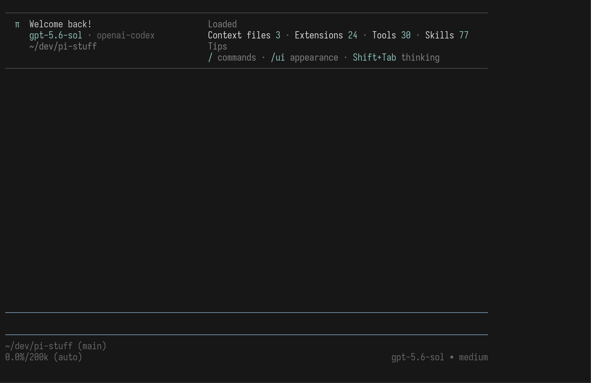
小 π、模型与 provider、完整缩写路径；右侧是四类 Loaded 统计和固定 Tips。只有上下细分隔线，没有卡片边框。
{kind=link}
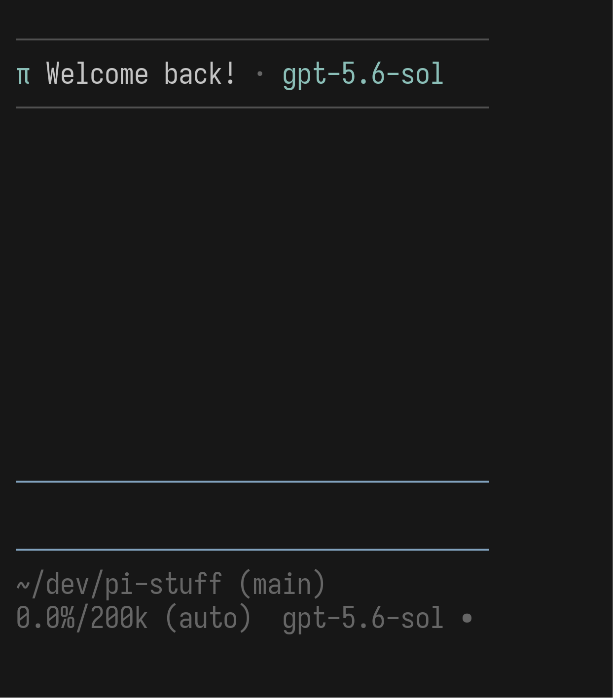
空间不足时，统计与提示让路；Welcome 不会整块消失。
{kind=link}
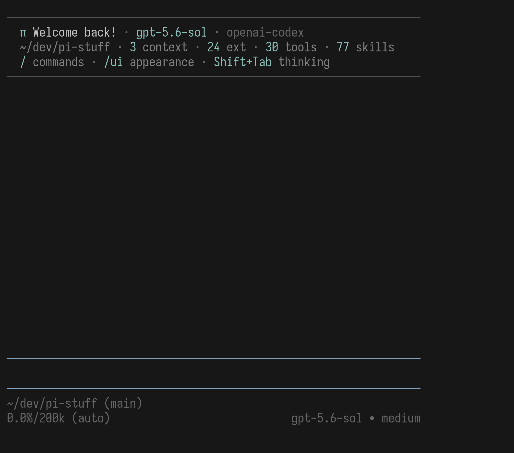
路径、四类统计和三条 Tips 仍在，但取消双栏标题，避免窄屏留下不均匀空洞。
{kind=link}
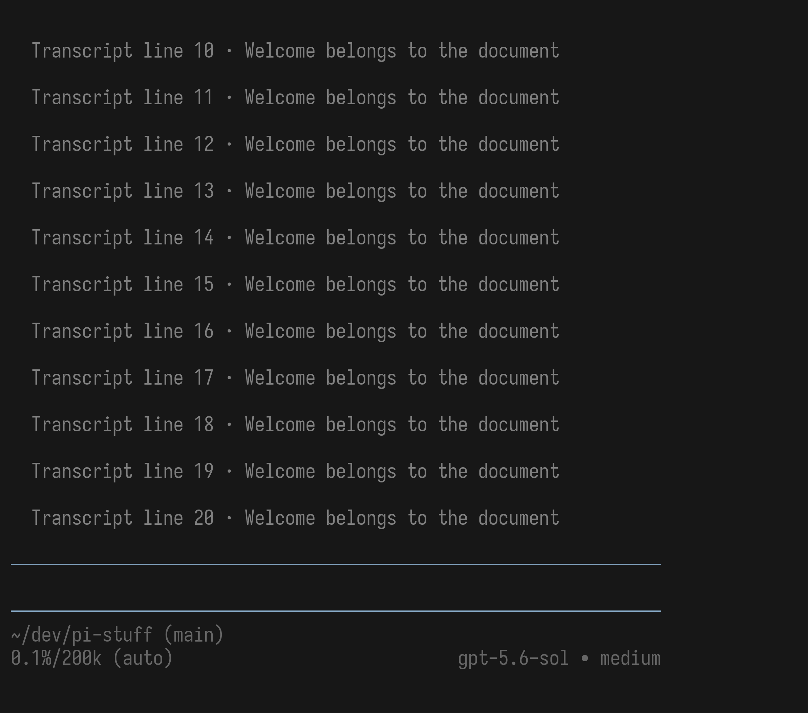
Welcome 没有固定占用顶端空间；正常 transcript 填满 viewport 后，它已经离开当前画面。
可复现：说明、PTY 捕获脚本、一次性 Extension。
生产版已恢复旧 Powerline 视觉语法；下方原型图仅保留为被拒绝的历史记录。
2026-08-03 的真实使用发现，下方点分隔、无图标截图并没有迁移旧 JC Footer 的视觉样式。生产实现现已改回左右一格留白、灰色竖线分隔、旧图标与 ASCII fallback、think:<level>、basename 路径、*unstaged +staged ?untracked、详细 context/cache，以及按完整 segment 流入第二状态行；仍使用 Pi 主题色，并保留不显示 (sub) 与 Prompt 最多两行的已确认差异。
当前真实 Aggregate 证据：完整按量文本帧、64 × 28、32 × 18。下方 PNG 是缺陷修复前的 rejected prototype，不代表当前产品。
{kind=link}
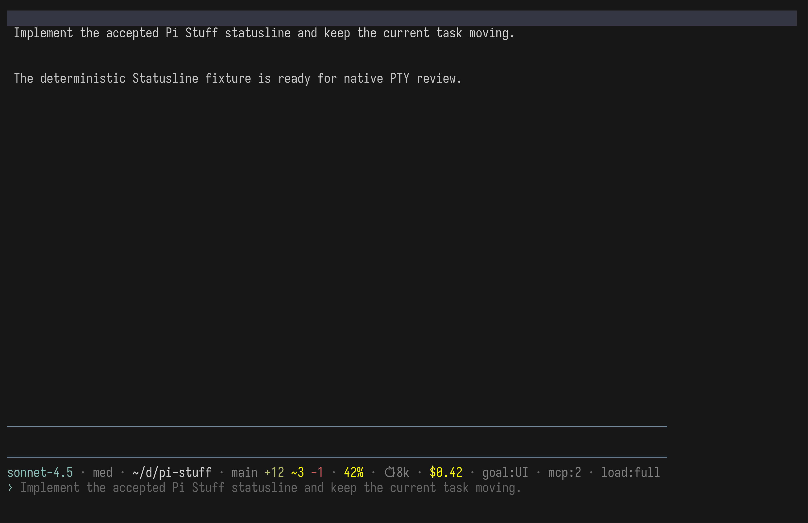
按量模型显示 $0.42；Goal、MCP、Loadout 保留为末端扩展状态。Prompt 独占下一行，不与环境字段争宽度。
{kind=link}
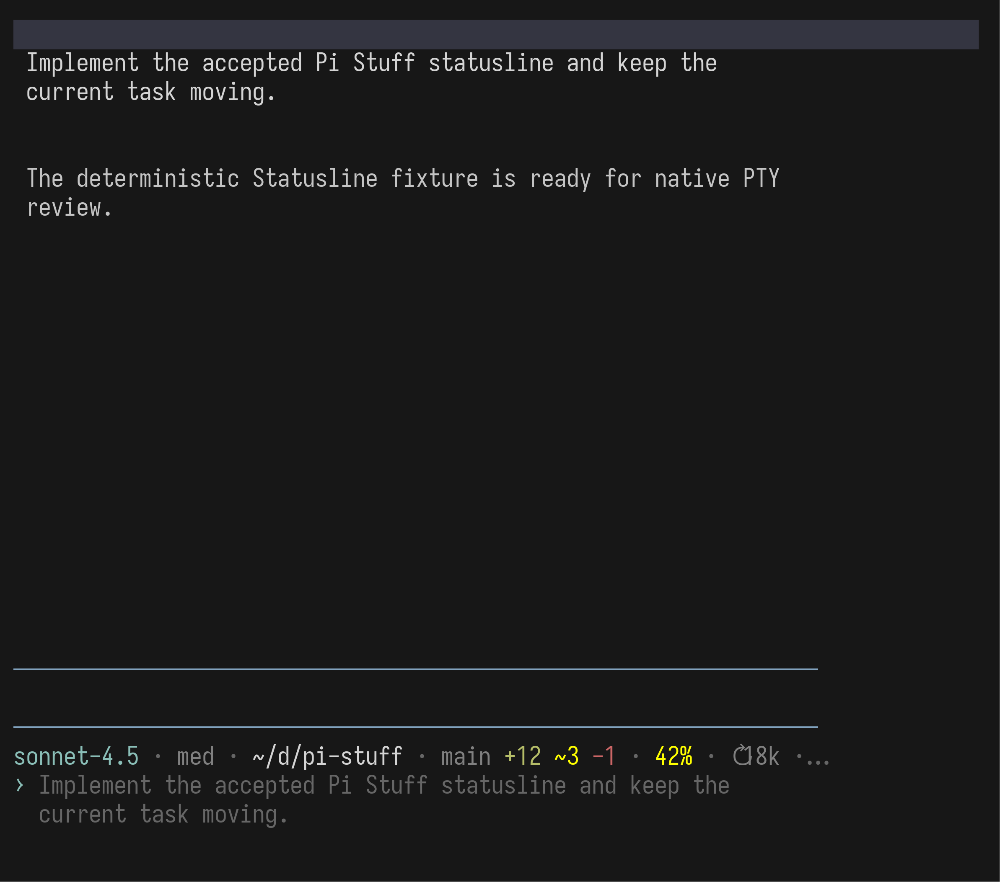
高优先级字段仍在；右端低优先级内容收束为省略号。Prompt 可以正常换行，不破坏编辑区域。
{kind=link}
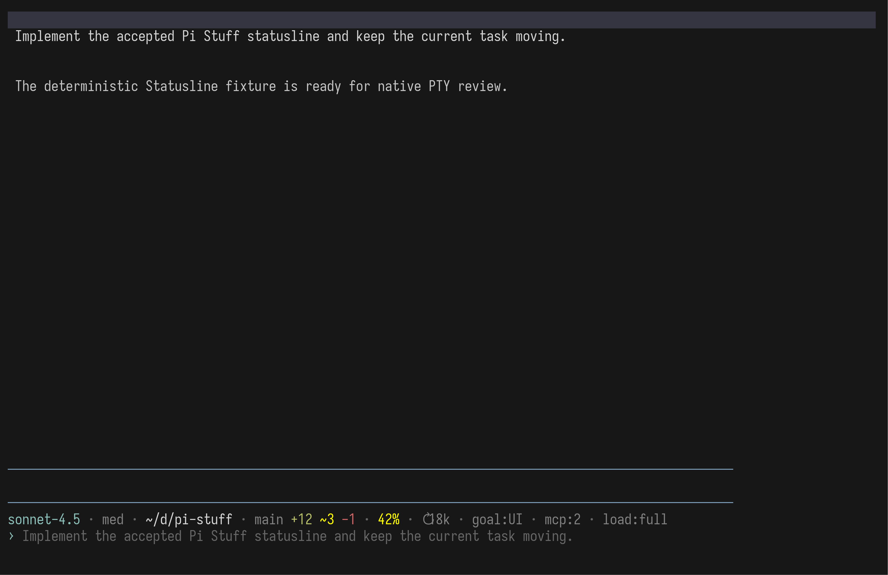
费用段直接消失；旧版的 (sub) 也不再出现。其余字段位置不改变。
{kind=link}
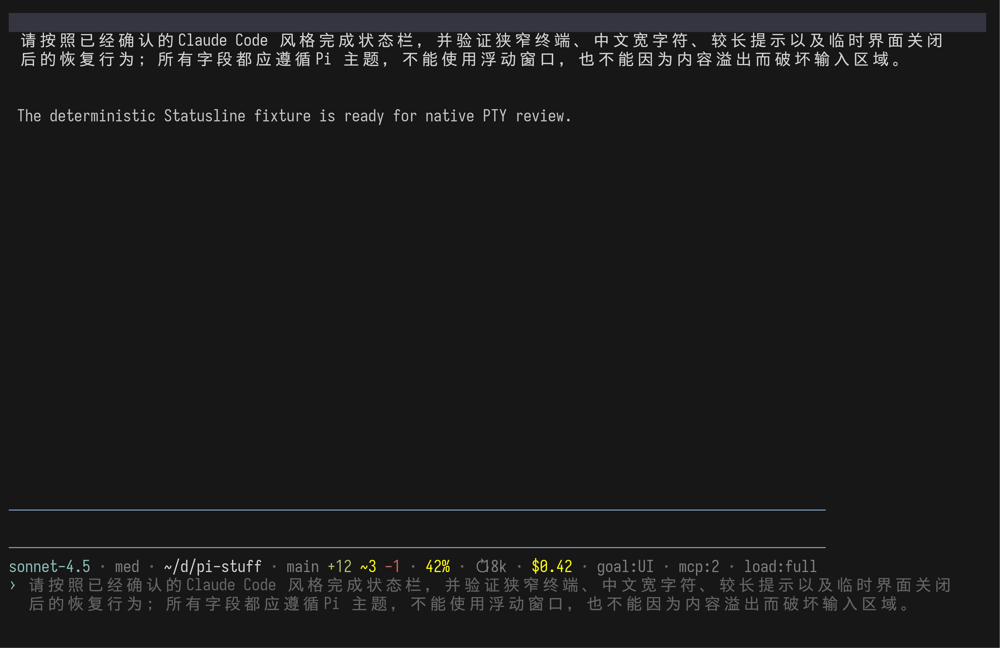
中文宽字符按终端 cell 计算；溢出只占第三行，不把主状态行挤乱。
{kind=link}
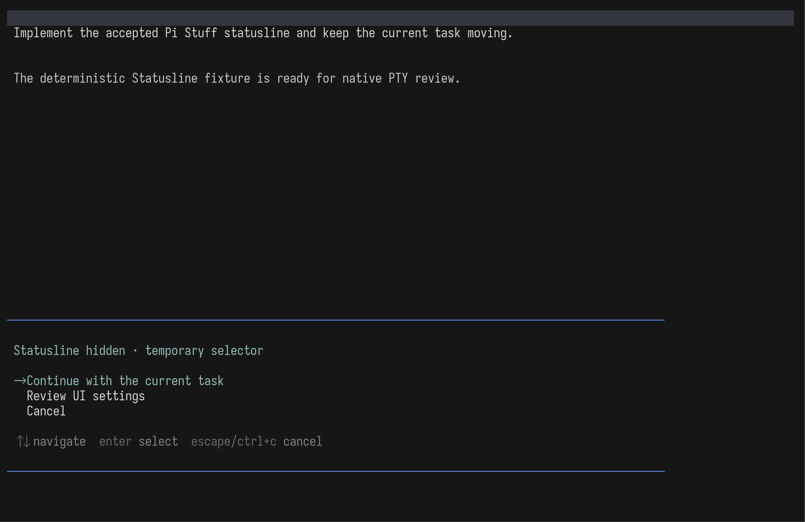
Settings、Agents、BTW、Permissions 等非浮动界面取得焦点时，Statusline 与 Prompt 行均返回零行。
{kind=link}
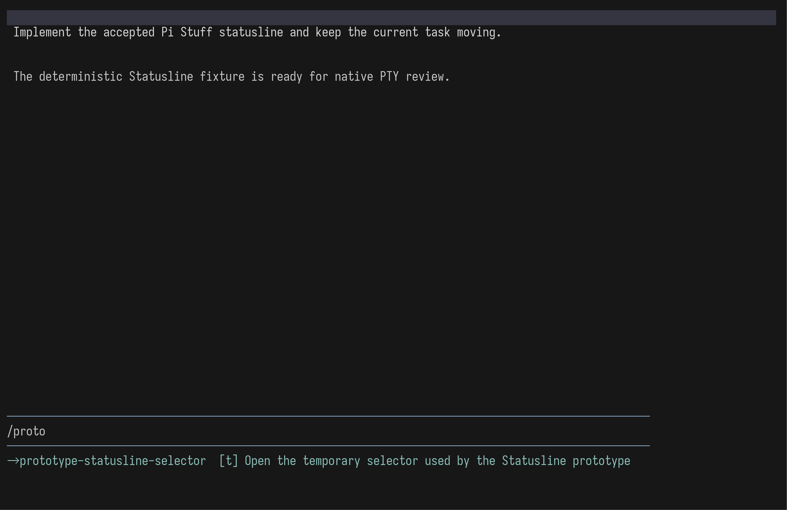
补全菜单出现时使用同一规则；关闭后原来的 Statusline、Prompt 和草稿恢复。
可复现：说明、PTY 捕获脚本、一次性 Extension。图中字段内容是固定 fixture；终端布局、主题色、CJK 宽度和隐藏生命周期由真实 Pi 渲染。
五个外观开关放在一个 Pi 原生列表里。
/ui 使用 Pi 自己的 SettingsList：全宽、非浮动、输入即搜索、Enter 或 Space 即时切换。五项都能同时看见，因此不为了装饰计数而制造滚动。
{kind=link}
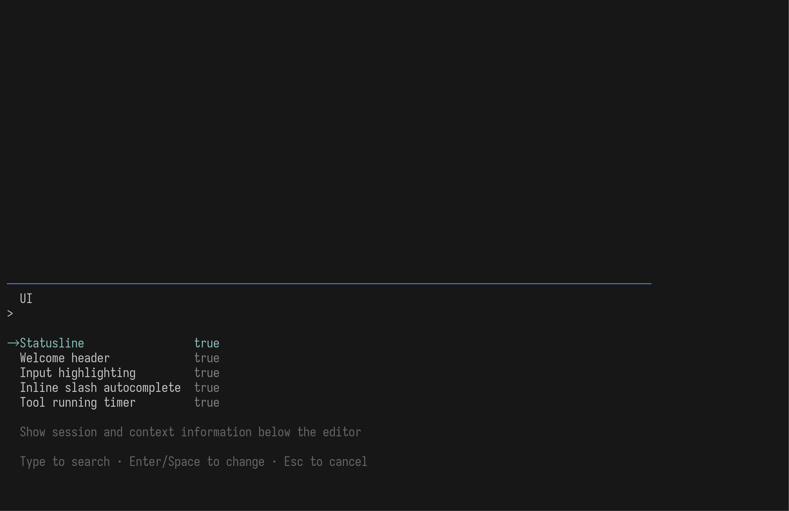
Statusline、Welcome、输入高亮、句中 Slash 补全与 Tool timer 默认开启；选中项说明放在列表下方。
{kind=link}
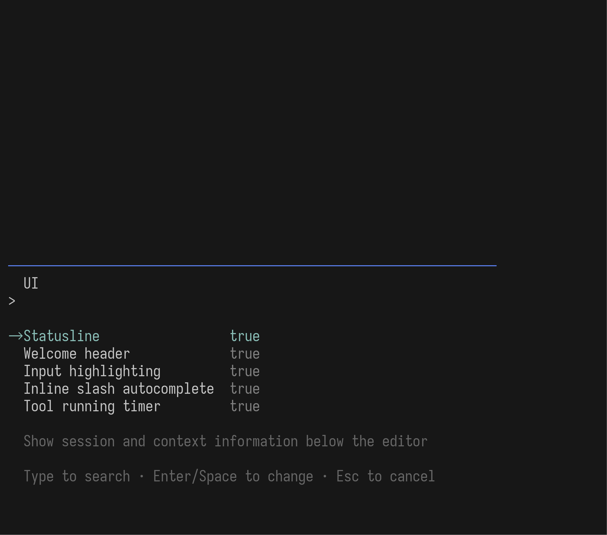
没有另造窄屏布局；Pi 原生列宽自然收紧，五项、当前值和选中说明仍可读。
{kind=link}
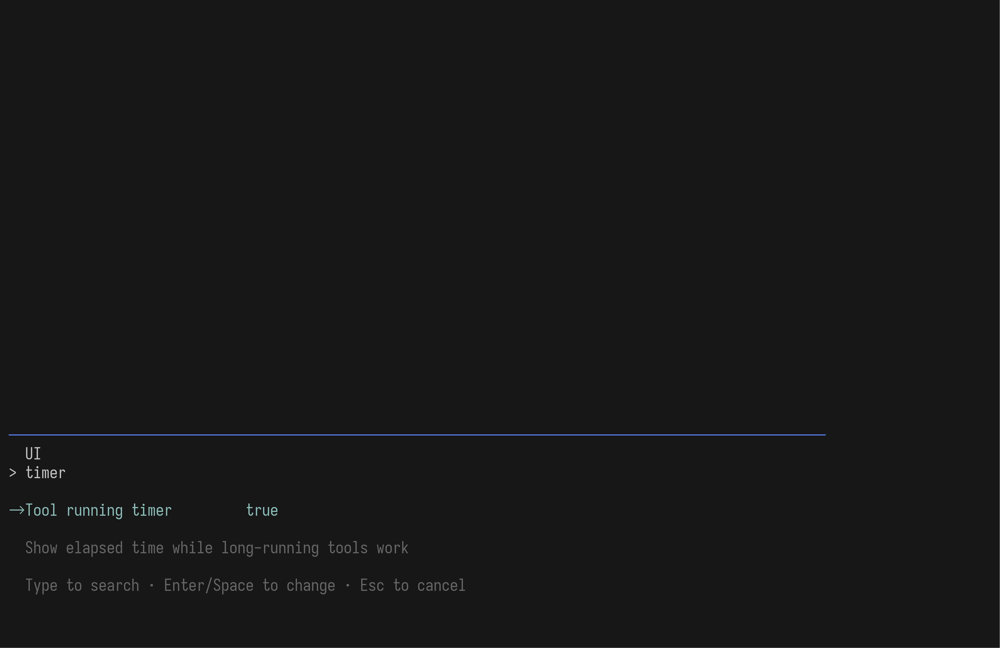
timer搜索复用 Pi 原生行为，不再加一个 GUI 式常驻搜索框。
{kind=link}
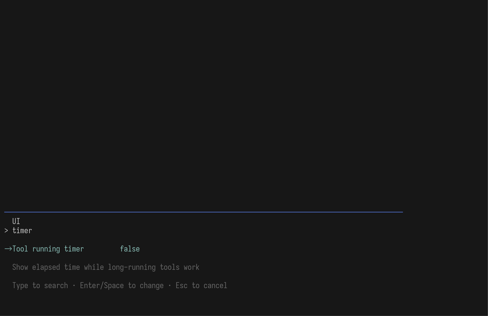
true → false除 Welcome 在下次启动生效外，其余选项切换后立即更新当前界面；Esc 关闭并恢复编辑器。
可复现：说明、PTY 捕获脚本、一次性 Extension。正式实现会把现有 /tool-settings 合并进这里。
三个入口看起来不同，但服从同一套边界。
thoughts:；普通 Pi 0.83 回退原生 thinking。Fullscreen 滚动条接受宿主固定的 auto。/ui 的最终可见效果，是否接受？
如果接受，我会把整棵决策树完整复述一遍，请你做最后的「理解一致」确认；确认后才进入正式实现、Beads 记录与 AGENTS.md 规则更新。若不接受，只需指出具体截图和想改的地方。